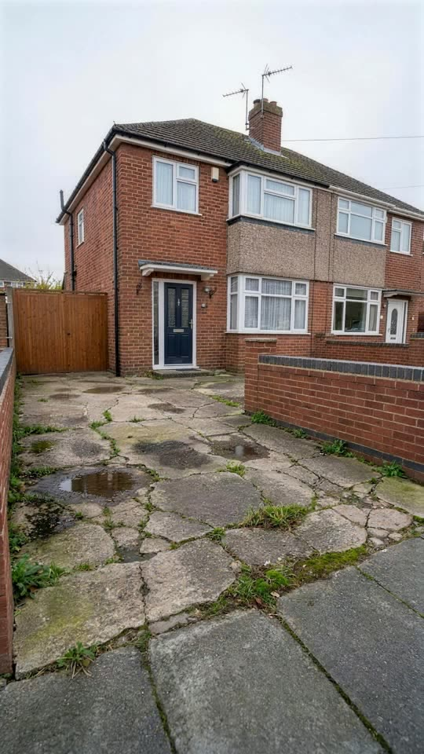
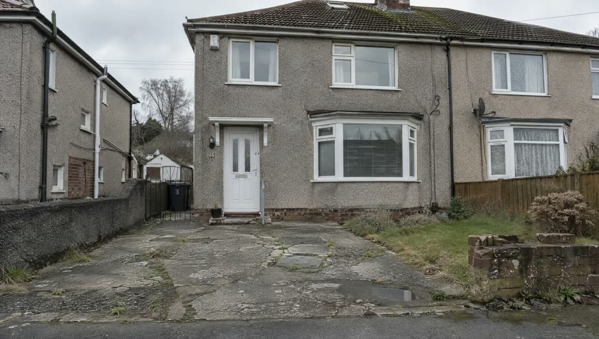
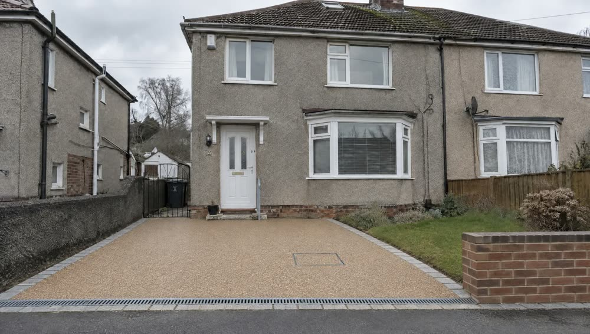
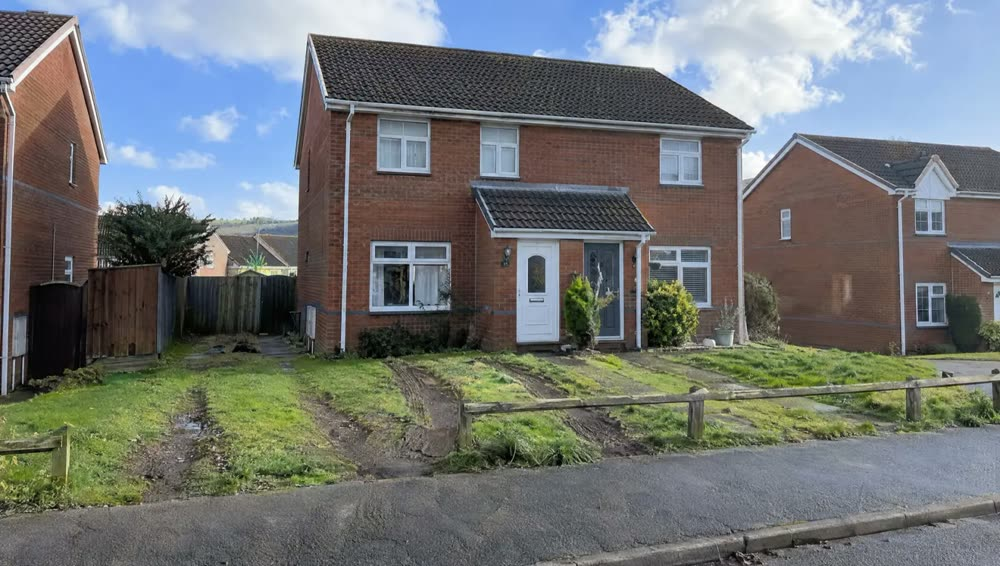
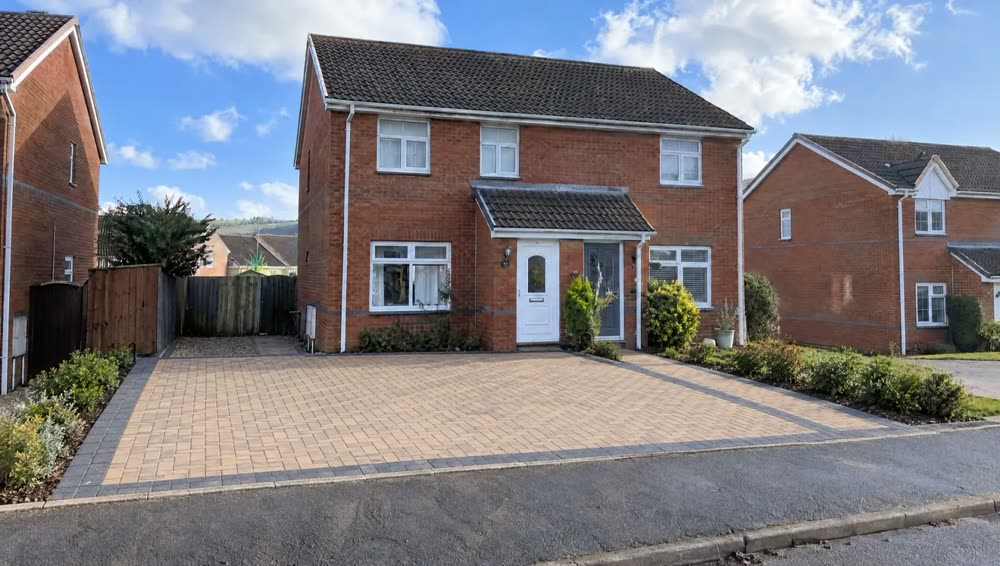

Our work
A few recent jobs, before and after.
Example jobBefore 
After
Block-paved driveway with a charcoal border

Dug out the cracked concrete and laid a block-paved drive with a charcoal border and new kerb edging.
Example jobBefore After
Resin-bound driveway


Replaced a broken concrete drive with a smooth resin-bound surface and brick-edged border.
Example jobBefore After
Front lawn turned into a two-car drive


Turned a rutted front lawn into a block-paved drive for two cars with planted borders.
Demo pictures. A real site shows the trader’s own jobs here.